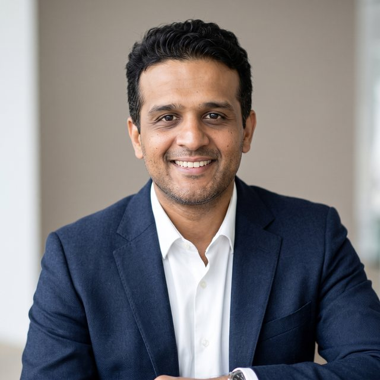

I have spent 20 years building things that solve real problems for real users. I started as a developer writing mainframe code, learned to lead teams of up to 100, and found my place in product. I go after the problems customers keep raising, prototype before I specify, and bring teams along with me. I like it best when a rough idea starts to work.
Senior Product Manager at Wire GmbH, a secure, end-to-end encrypted messenger built in Europe. I lead Integrations (SDK and AI) and Core Messenger, from customer discovery to launch.

Results
What changed for the product and its customers because of the work below.
- 10 new paying teamsIntegrations SDK. A developer platform on top of Wire: new paying teams, a growing developer community, and new partnerships.
- 5 supported appsExternal Apps. Developers build apps and share them across teams. Ten paying teams are actively building, many privately for their own organization.
- 70% of developersA customer survey set the SDK roadmap. Most of the developers surveyed wanted TypeScript/JavaScript and Java/Kotlin, so both SDKs shipped.
- +24% iOS app downloadsMulti-backend support and navigation changes on iOS. Both were top enterprise requests. Together they gave the app a fresh look and helped keep major customers from churning.
- A gap closedPreventing Adminless Groups. A problem open since Wire’s inception, raised by its most critical enterprise customers, fixed with no compromise to security.
About me
Here is who you would be working with.
How I work with teams
I listen first. I am patient and empathetic, and I take 360-degree feedback seriously because I want to keep getting better. I start with the customer and work back, prototype early so the team debates something real, and keep the first version small enough to ship. I focus on speed and quick delivery: shipping early brings feedback early, so we improve as we go instead of waiting until the last minute. I coach more than I command, and I say what I think in plain language.
What I value
- Customers and developers, equally. I value both, and a product succeeds when both are actively involved.
- Listening and learning. I ask for feedback from every direction and keep improving.
- New challenges. I accept each one as a chance to learn and excel. Every new opportunity is a way to improve myself and add more value.
- Trust. People I have worked with describe me as dependable, trustworthy, and a team player.
AI and speed
I am an AI enthusiast. I see AI as a tool that extends what we can deliver and build. I like speed and agility: fast prototypes, early feedback, quick corrections.
My journey
I trained as an electrical engineer in Trivandrum, Kerala. Infosys put me on mainframes, then onsite with clients in the US. At EY in India I went from running projects to owning products across APAC and EMEIA, with teams of up to 100. In 2022 I joined Wire GmbH, a secure messenger. It was an opportunity I could not miss: working with some of the best minds in the industry, and learning first-hand how much privacy and security matter to us in the modern world. I started with Wire’s most critical customers and moved into product. Every step taught me the same thing: the closer I get to the customer, the better the product.
Product shipments in the last year
Each one links to its public announcement.
Integrations and Apps SDK
- SDK Apps live in productionMoved the SDK to production: self-service app creation for paid teams and a production JVM SDK (Java, Kotlin, Scala).
- Apps Management, Phase 3Full lifecycle control for admins: view, edit, rotate tokens, and delete apps. A core enterprise requirement.
- Integrations SDKThe foundation for building apps and integrations on the messenger.
- Developer documentation portalI conceived the documentation site and defined every flow and the document structure.
- Apps SDK for JavaScript and TypeScriptBuilt on what customers’ developers told us they wanted to use.
- External AppsShare apps with every team on the messenger, toward a self-sustaining ecosystem and a future marketplace.
Core Messenger
- Multi-backend support on iOSA top enterprise request, delivered with the navigation update below.
- iOS UI navigation improvementsAnswered repeated enterprise requests and refreshed the app.
- Preventing Adminless GroupsFixed a long-standing enterprise gap without weakening security.
Skills and credentials
The craft behind the results, and the certifications that back it.
Product
- Roadmapping and strategy
- Discovery and customer interviews
- Prioritization and PRDs
- Go-to-market and launch
AI and prototyping
- Figma
- AI-assisted prototyping for demos and user testing
Delivery and leadership
- Scrum, Kanban, Agile coaching
- Jira, Azure DevOps
- Stakeholder management
- Global team leadership
Certifications
- PMP (PMI)
- Certified Scrum Master (Scrum Alliance)
- Disciplined Agile Scrum Master (PMI)
- Scrum Fundamentals Certified
Experience
Twenty years across engineering, delivery, and product.
-
2022 to nowProgram Manager, then Senior Program Manager, then Senior Product ManagerWire GmbH, a secure messenger, Berlin
Own the roadmap for Integrations (team of 6) and Core Messenger (team of 10), supporting 10 major enterprise accounts in sectors where security, compliance, and legal demands come first. Started in service delivery, setting up customer support and managing the critical customer portfolio, before moving into product.
-
2014 to 2022Project Manager, then Senior Project Manager, then Product ManagerEY GDS
Set product vision for Strategy and Transactions products across APAC and EMEIA and built out the APAC Product Management portfolio: market-research products that give clients one view of company information and parent-child corporate structures. Ran projects with teams of up to 100 and budgets up to $5M.
-
2006 to 2014Software Developer, then Business Analyst, then Technology LeadInfosys
Led technology projects onsite in the US for clients including Gap Inc and Aetna, and managed offshore teams of up to 10. Four years of mainframe application development (COBOL, CICS, JCL) gave me the engineering base I build on today.